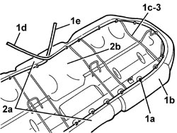

7050A56 REAR SEAT CUSHION FRAME - R.R.
- Path
- Procedures > 70 FITTINGS > 7050 REAR SEATS > 7050A REAR SEAT ASSEMBLY > 7050A56 REAR SEAT CUSHION FRAME - R.R.
- Kind
- repair procedure (removal / refitting; the operation number is the code)
- Applies to
- all engines; all production periods
- Interactive page
- https://sloeber94.github.io/elrnDB/#/939011327
Applies to: all engines; all production periods
 Removing
Removing
 Refitting
RefittingOp. 7050A20 ONE-PIECE REAR SEAT CUSHION - R.R.
1. Using clippers, cut all the retainers (1a) securing the perimeter of the cushion cover (1b) to the frame (1c).
Also release the ends (1d) and (1e).
2. Release the cover (2a) from the frame (1c) along the entire perimeter of the cushion.
3. Remove the cushion frame.

Applies to: all engines; all production periods
Refitting
Removing- Check that the cushion frame is not damaged.
- Position the frame on the upholstery.
- Fit the cover on the upholstery, along the entire perimter of the cushion. Mould the cover onto the upholstery.
- Fasten one end to the frame, then pull the other end until the cover is taut; lastly, secure the end to the frame.
- Using special pliers, attach the retainers fastening the perimeter of the cushion cover to the frame.